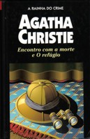

Encontro com a Morte e O Refúgio
Appointment with Death and The Hollow
Além dos romances, Agatha Christie foi autora teatral. Neste livro são reunidas duas peças daquela que é universalmente conhecida como “a rainha do crime”. Com a ação passada em Jerusalém, Encontro com a morte apresenta uma das personagens mais cruéis da literatura policial e um crime igualmente perverso. Do quarto de um hotel, um homem ouve um diálogo curioso. Mas um assassinato é cometido e ele percebe que aquelas palavras continham um significado macabro. Encenada pela primeira vez em 1951, a peça O refúgio alia o refinado humor inglês a um final surpreendente.